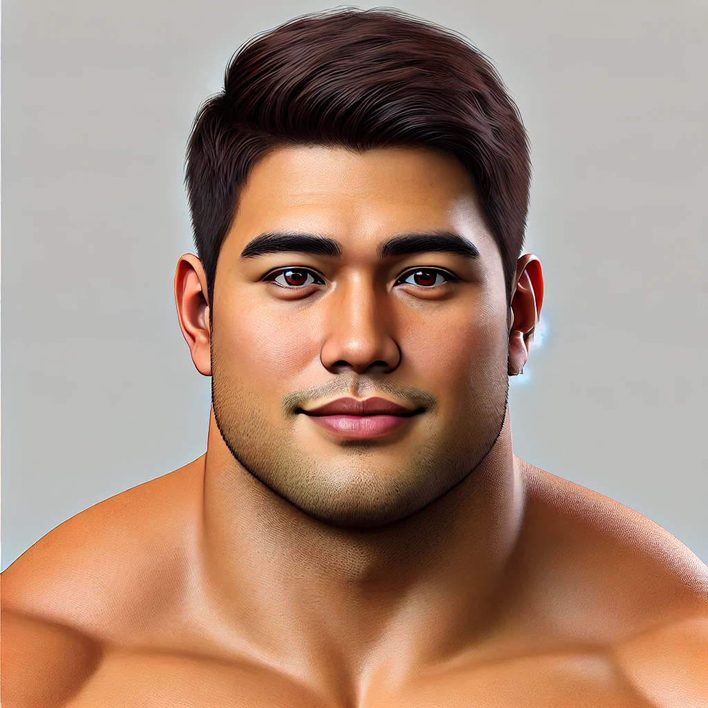

Electrical Engineer transitioning to Software Development
Electrical Engineer transitioning to web development, pursuing a degree in Computer Science. Passionate about creating dynamic, user-friendly web experiences. Skilled in HTML, CSS, JavaScript, and Python, with a strong foundation in problem-solving and team collaboration. Seeking an entry-level web developer position to apply my skills and grow within a forward-thinking organization